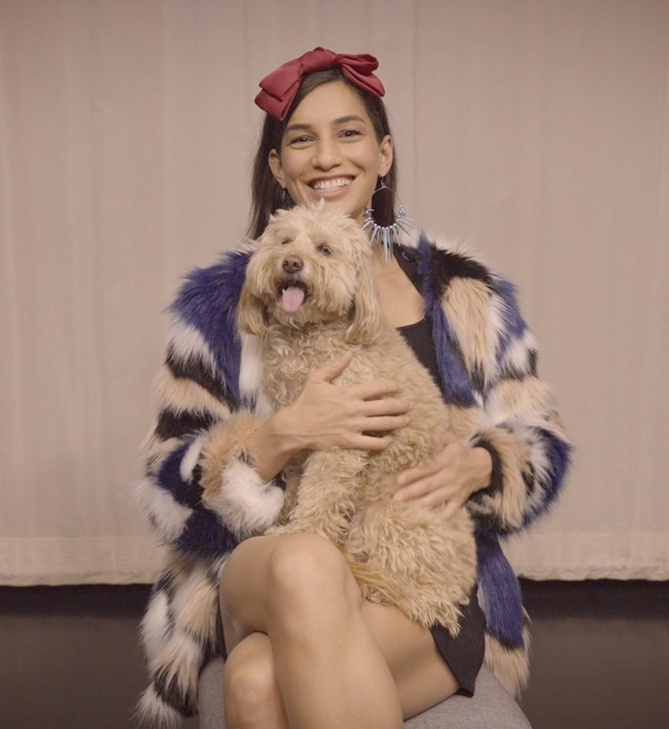

You're not broken.
Your nervous system learned to survive.
Gentle, body-based coaching for high achievers, recovering perfectionists, and anyone who's tired of trying to fix themselves. We go slow, and it actually sticks.
Doing everything right and still feeling wired, tired, or far away.
You've read the books. Maybe you've tried breathwork, retreats, plant medicine, every app. Some of it helped for a minute. Then the old patterns came back and you blamed yourself for not doing it well enough. That's not a character flaw. It's physiology.
The "good girl" who never gets to rest
Straight A's, high standards, holding it all together. On the inside it's anxiety, self-criticism, and a constant scan for what might go wrong.
Swinging between hyper-independent and over-giving
Either you do it all alone, or you disappear into what everyone else needs. Saying a simple no feels enormous.
Foggy, numb, or not quite here
Days blur together. You miss things that were right in front of you. You're functioning, but you're not really living in your body.

I know this terrain from the inside.
For most of my life I was the high-achieving, rule-following, perfectionist kid who looked fine from the outside and was quietly shut down on the inside. Anxiety was my baseline. I spent years throwing everything at the wall to feel better, and I kept blaming myself when nothing held.
What finally changed things wasn't a better mindset or a bigger breakthrough. It was learning that the problem lived in my nervous system, and then doing the slow, unglamorous work of building capacity, one small layer at a time.
Today I'm playing piano again after years away from it. I have relationships built on real reciprocity. I have a healthy, integrated "no." I'm still learning, and that's part of what I bring to you: not a finished guru, but a fellow traveler who knows the road and knows how to walk it gently.
Before coaching, I spent more than a decade in luxury spa and fitness, including three years as General Manager of Ocean Lab, a membership wellness space here in Austin, where I led a team and got to see up close what helps people actually feel better in their bodies.
"It wasn't just a read-a-book-and-change-my-mindset kind of deal. It was really inhabiting my body, and being able to perceive and sense and move differently with other people."Jerika, on her own healing
Slow is the shortcut.
I've lived what happens when too much gets stirred up too fast. So we don't chase catharsis here. We build the foundation first, so the changes you feel are ones your body can keep.
Orient
Coming back to the room you're in. Noticing what's actually here, through your eyes, your ears, your skin. It sounds simple. It's often the first time in years.
Notice
Learning your own stress physiology: the held breath, the bracing, the shutdown. No judgment, just curiosity about what your body has been doing to protect you.
Complete
Letting stored survival energy move in small, manageable doses. Shaking, sighing, warmth, tears. We follow your body's timing, never force it.
Build capacity
Over weeks and months, more room for feeling, for rest, for connection, for joy. Healthy boundaries and real agency start to show up on their own.
Ways we can work together.
Every journey starts with a free conversation, so we can see whether this feels like the right fit for you and your system.
Discovery call
A relaxed, no-pressure 20 minutes to talk about what's going on and what you're hoping for.
- Free, by video
- Ask anything about the work
- Leave with one simple practice
1:1 somatic coaching
Ongoing sessions to gently regulate your nervous system and build real, lasting capacity, at your body's pace.
- Online, wherever you are
- Orienting, resourcing, and pendulation
- Simple practices between sessions
- Support for perfectionism, anxiety, shutdown, and boundaries
Wellness spaces
For studios, spas, and wellness centers who want their members and staff to feel genuinely cared for.
- Nervous-system-informed member experience
- Team workshops on stress and regulation
- Operations know-how from a former GM
Good to know.
What is somatic coaching, exactly?
It's coaching that works with your body and nervous system instead of only your thoughts. Rather than trying to think your way out of anxiety or shutdown, we learn to notice and gently shift the physiology underneath them.
Is this therapy?
No. Somatic coaching isn't therapy or medical treatment, and it doesn't replace care from a licensed professional. Many people do this work alongside therapy, and I'm always happy to talk about what kind of support fits you best.
I've tried breathwork, retreats, and a lot of other things. Why would this be different?
Many intense practices open things up quickly but don't teach your system how to hold what comes up. This work is deliberately slow and foundational. It's less dramatic in the moment and far more durable over time.
I'm pretty spiritual. Isn't this just more self-improvement?
It's closer to the opposite. A lot of us learned to use beautiful spiritual language to explain away what our bodies were actually telling us, staying in places and relationships that were quietly hurting us because we could frame it as growth. This work brings the body back into the conversation. Your spirituality gets to stay. It just stops being a way to skip over what you feel.
How is this different from mindset or manifesting work?
Plenty of people are told that if they just change their thoughts or their frequency, everything else follows. Real change is usually less glamorous than that. Your nervous system needs repetition, safety, and time, and so does your life. I'd rather be honest about the work it takes than sell you a shortcut.
Do I need to have trauma to do this work?
No. Not everyone is carrying something heavy, and I'm not here to turn your life into a diagnosis. Some people come because they feel stuck in old patterns. Others just want more ease in their body, steadier relationships, or a better sense of their own yes and no. If you're curious, that's reason enough.
Can this help with relationships and boundaries?
Very often, yes. People are always giving off signals about how they're really doing, and a dysregulated system tends to miss those signals or talk itself out of them. As your capacity grows, it gets easier to notice how someone actually makes you feel, to let trust be earned over time, and to say no without spiraling.
Do you work in person?
Sessions are online, so you can join from anywhere. I'm based in Austin, so reach out if you're local and would like to talk about meeting in person.
How long until I feel a difference?
Some people notice small shifts right away, like breathing a little easier or sleeping a bit better. Deeper changes tend to unfold over months. It isn't linear, and that's normal.
Let's start slowly.
Send me a message and we'll find a time for a free 20-minute call. No pressure, no pitch. Just a conversation.